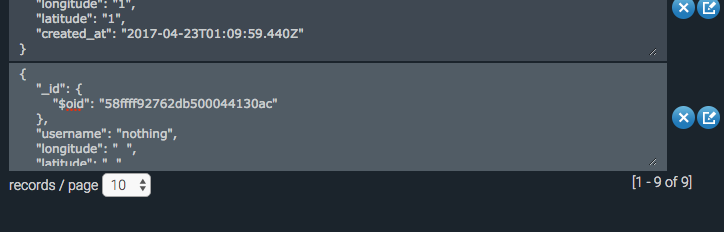
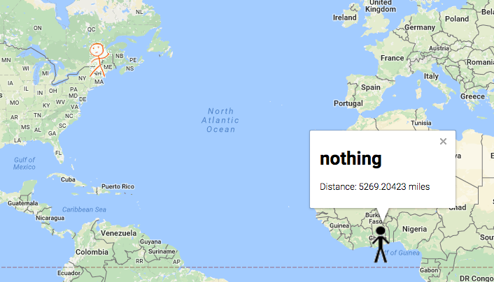
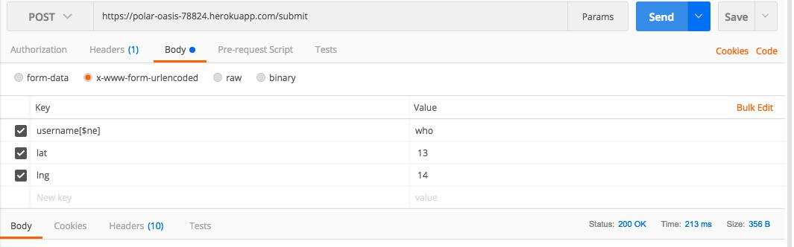
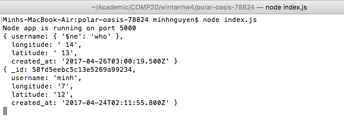

Introduction:
- Product: A web server that works with two sets of data: vehicles and passengers. This server returns to the client the set of all currently active vehicles if the client is a passenger, and vice versa when the clients post their information. The web server also returns the information about a specific vehicle or all past vehicle requests.
- Task: To find any privacy or security issue in the web server.
-
Methodology:
Use curl and Postman to get/post data in different ways and analyze the response from the server to find any potential security issue. Then, analyze the source code of the server to confirm the issue, find a resolution, and identify any other problem.
-
Abstract of Findings:
- The username input is not sanitized at all before being displayed to the client. Hence, a Cross Site Scripting Attack may completely prevent the user from properly accessing the page through a browser.
- Even though the lat and lng values are checked, there is still a particular malicious value that can be posted to throw off the performance of the program.
- An unsafe data storing method for the collection of passenger is used that might potentially result in modification of data that the client is not allowed to access.
-
Issues Found:
-
Cross Site Scripting Vulnerability:
Location found: https://polar-oasis-78824.herokuapp.com/
Severity: High. Might completely prevent the users from accessing the page.
Description of issue:
- First: Use Postman to send a JavaScript function as username and legitimate values as lat and lng as shown below.
- Next: After this function is inserted into the database, it will be retrieved through route GET /. The function will be executed when the information are displayed in the html page sent to the client.
- For the above POST info, an alert box will pop up every time https://polar-oasis-78824.herokuapp.com/ is accessed (see image below). If the JavaScript function POSTed redirects the client to another page, the client will not be able to access the original page at all.
Resolution: Sanitize the username by replacing every special character by the empty character.
-
Junk data that can be injected that might affect the performance of web apps using the server to find passengers/vehicles:
Location found: https://polar-oasis-78824.herokuapp.com/submit
Severity: Low. Bad lat and lng values can be posted so that they are stored in the database as null values, which affects how the users are displayed on the map.
Description of issue:
- First: Use Postman to send ' ' (an empty space) as lat and lng as shown below.
- Next: We can see that this instance will be stored in the passenger collection with empty lat and lng values. This is because even though the server check if the lat and lng values it receives is not undefined or NaN, an empty space character passes these tests.

- Then, if any vehicle want to get the list of passengers and display them on a map, there will be a fake passenger in Africa. This is not a particularly harmful issue, but it affects the performance of the program and the experience of the users nonetheless.

- Resolution: To check for single space character in lat and lng.
-
Potential illegal data modification issue:
Location found: https://polar-oasis-78824.herokuapp.com/submit
Severity: Low. MongoDB query-like string can be sent to the server to trick the server to search for username that is not allowed to be accessed. The result is not shown to the client, and the malicious username is not stored properly in the databse, but it might be an issue if MongoDB changes the way it stores data.
Description of issue:
- First: Use Postman to POST the following information.

- Next: We can see that the server will parse the username sent above as {$ne: "who"}, which is similar to a MongoDB query that finds documents in which the username is not "who".
- Then, as it looks for documents in which the username is not "who", it returns a document in which the username is "minh", as shown below.

- Finally, when the server tries to update the document with username "minh", which is not allowed to be accessed, to the malicious data just posted by the client, MongoDB stops the process as it does not allow a document whose value has a dollar sign ($) character to be stored, as shown below. However, if MongoDB changes this rule in the future, then the document with username "minh" will be removed from the database by this attack. Therefore, it is still better to take this issue into account.
- Resolution: To check whether the username key returned by the query is identical to the original username key before updating the database.
Conclusion:
Overall, there is one high severity issue and a few low severity vulnerabilities detected. The best solution to these problems is string checking to make sure the data sent to the server to be stored/queried is adequate.References:
- Professor Ming Chow's talk on Abusing NoSQL Database: https://www.youtube.com/watch?v=lcO1BTNh8r8
- Hacking NodeJS and MongoDB: http://blog.websecurify.com/2014/08/hacking-nodejs-and-mongodb.html
- Cross-Site Scripting (XSS) Tutorial: Learn About XSS Vulnerabilities, Injections and How to Prevent Attacks: http://www.veracode.com/security/xss